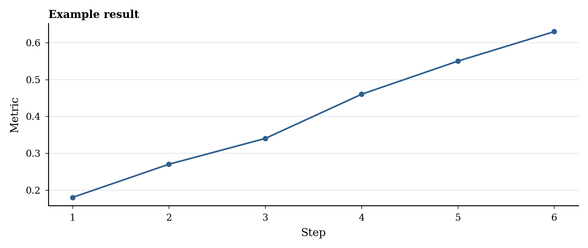
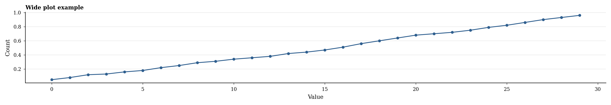

Research Note Title
Start the note here. This template is plain HTML, so plots, tables, custom sections, and small scripts can live directly inside the note. Citation previews use links like [1].
Question
Replace this with the research question, setup, result, or partial finding. Inline math works like $h_\ell = x_\ell + a_\ell$, and display equations can be written with MathJax. Number only equations you plan to refer to, such as Eq. 1:
For display math that does not need a reference, omit the ID and label:
Setup
- Model:
model/name - Layer:
layer_12 - Dataset:
dataset/namesplittrain - Metric or threshold: 0.7
Method
Describe the model, prompts, layers, hooks, metrics, or data-processing steps. Keep generated artifacts local to this folder so the note remains self-contained.
Compact Result Summary
Keep supporting counts in prose unless they are the main result. For example, the run produced 136,410 components, with 19,916 non-singleton components.
Top component sizes:
826000, 276, 259, 210, 187, 185, 110, 107
Use provisional labels when interpreting inspected examples: possible formatting component.
Plot
Refer to figures with deep links like Figure 1.

Table
Refer to tables with deep links like Table 1.
| Layer | Metric | Observation |
|---|---|---|
| 12 | 0.00 | Replace with a real result. |
Wide Blocks

| Component | Size | Top tokens | Unique docs | Example context | Interpretation |
|---|---|---|---|---|---|
| Rank 2 | 276 | : |
276 | <bos>Q: |
Replace with a wide table, card grid, or other dense artifact. |
| Rank 3 | 259 | \n |
259 | <bos>Q:\n |
Use a wide wrapper when the normal text column is too narrow. |
Table 2. Wide tables can use the post-wide wrapper and still be referenced with links like Table 2.
Notes
- Use the plots folder for PNG, SVG, or PDF figures.
- Use scripts/plot_example.py as the starting point for plot-generation style: serif font, small labels, light grid, and 300 DPI.
- Use inline code styling for code-like identifiers, not for every number or threshold in prose.
- Prefer normal-width blocks. Use wide blocks sparingly, only when a figure, table, grid, or component card genuinely needs more horizontal space.
- When labels are interpretive guesses, mark them as provisional rather than final names.
- Avoid keeping CSV or JSON files in the website unless the page needs them to render or reproduce a small result.
- Use relative paths such as plots/activation_histogram.png.
References
- Replace with a paper, post, or dataset reference. arXiv.